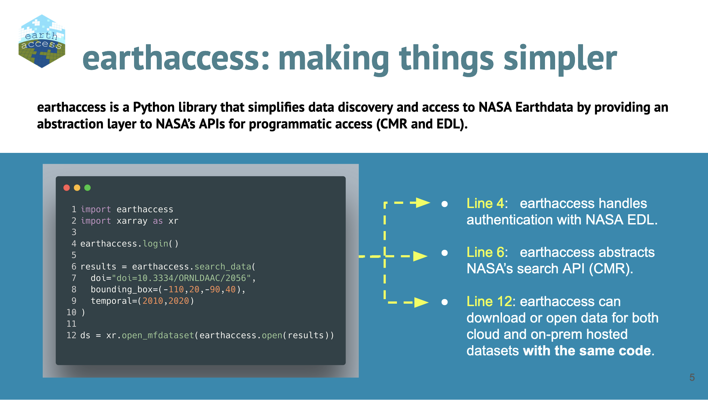
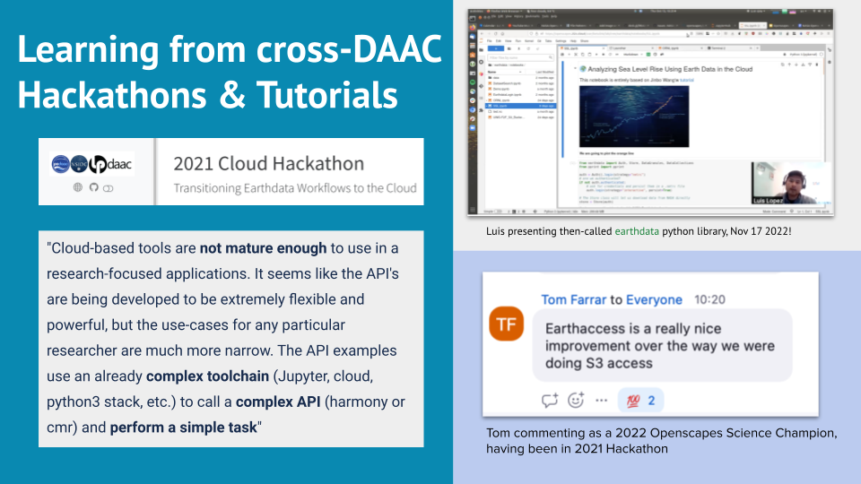
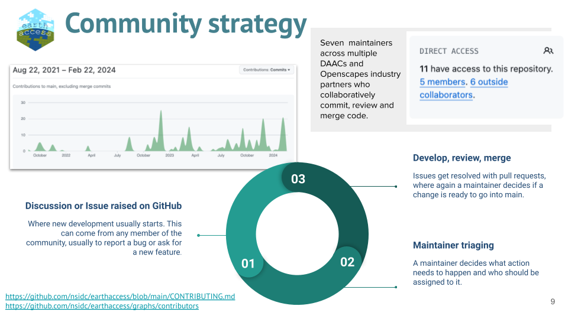
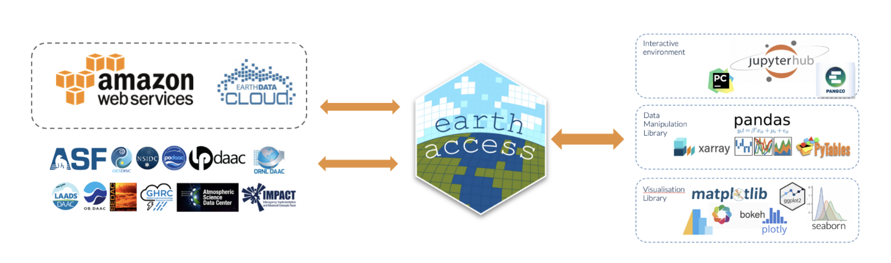

earthaccess: Accelerating NASA Earthdata access through open, collaborative development
Luis López ![]()
Matt Fisher
Aaron Friesz
Qiusheng Wu
Amy Steiker
earthaccess community
earthaccess is Python library that simplifies data discovery and access to NASA Earthdata. On February 26, the authors co-presented at the NASA Earth Science Data Systems (ESDS) Tech Spotlight meeting — to a crowd of 88 people! The author list is testament to this open community of developers: Luis López, Matt Fisher and Amy Steiker are at the National Snow and Ice Data Center (NSIDC), Aaron Friesz is at the Land Processes Distributed Active Archive Center (LP DAAC), and Qiusheng Wu is at University of Tennessee and an active open science community leader. This is a brief post to share resources and a few highlights - we encourage you to review the slides, recording, repos, and notebooks below. Additionally, please join this open science community effort via regular remote hackdays!
Quicklinks:
- slides - slides co-presented by the authors
- recording
- earthaccess and the cloud: the force awakens notebook - from Luis’ demo
- OpenGeos: NASA-Earth-Data GitHub repository - from Qiusheng’s demo
- leafmap: nasa earth data notebook - from Qiusheng’s demo
- Bi-weekly hackdays, Announcement and ongoing discussions for more info.
Amy Steiker began the presentation framing the problems that earthaccess addresses: data accessibility, API fragmentation, and authentication in the cloud.

earthaccess eliminates the need to know the intricacies of NASA’s Application Programming Interfaces (APIs) and cloud data storage systems.She described earthaccess as a community, with roots in the NASA Openscapes community where staff with similar roles supporting users across the DAACs (NASA data centers) have been able to learn, develop common tutorials, and teach together.

earthaccess design came from learning/responding to researcher pain points from cross-DAAC Hackathons and Champions Cohorts
earthaccess growth and utilization.Aaron Friesz then shared about Earthdata Authentication - Old vs New. The old approach was 30 lines of code, where the user also had to interface with the Earthdata login site. earthaccess now replaces this with 1 line of code. Plus, earthaccess also takes care of AWS credentials.
LP DAAC uses earthaccess in all of its tutorials and teaching events, including ECOSTRESS and EMIT workshops and hackathons. It has changed the way they work, develop, and teach.
Luis López, earthaccess lead developer, then shared about scaling in the cloud using earthaccess from a earthaccess and the cloud: the force awakens notebook. He shared how earthaccess interfaces between DAACs-AWS and open science community resources.

earthaccess interfaces between DAACs-AWS and open science community resources.Luis demo’ed many parts of earthaccess:
- Access remote files, automatically handling authentication and serialization.
- Generate an on-the-fly Zarr compatible cache with Kerchunk!
- Smart Access - Sneak peak today, more details at SciPy 2024!
- Scale out workflows with Dask - Processing Terabyte-Scale NASA Cloud Datasets with Coiled
Luis demo’d upcoming features in development for earthaccess that reduce egress sizes (saves NASA $$) and time to science! This is incredibly exciting!
Egress:
without earthaccess: 3199.29 MB
with earthaccess : 112.0 MB
Time to science:
without earthaccess: 15.9 minutes
with earthaccess : 0.52 minutesQiusheng Wu then shared earthaccess in action with leafmap. Qiusheng built the NASA Earth Data Catalog on top of earthaccess, which uses GitHub Actions to pull the most recent metadata records for NASA Earthdata. Then, using leafmap — Python package for geospatial analysis and interactive mapping in a Jupyter environment that Qiusheng developed — users can interact and view the metadata on a map, exploring and selecting to find the data they want.
This is so exciting to have earthaccess involved as the 88th notebook example in the leafmap resource list! You can click to launch the notebook in different coding environments, including Google Colab.
earthaccess has a lot of momentum moving forward as an open science community, and we welcome you to join our bi-weekly hackdays: fostering new contributions through small group work aligning around specific topics or features. Please reach out if you are interested in joining! See our Announcement and ongoing discussions for more info.
Citation
@online{lópez2024,
author = {López, Luis and Fisher, Matt and Friesz, Aaron and Wu,
Qiusheng and Steiker, Amy and community, earthaccess},
title = {Earthaccess: {Accelerating} {NASA} {Earthdata} Access Through
Open, Collaborative Development},
date = {2024-03-04},
url = {https://nasa-openscapes.github.io/news/2024-03-04-earthaccess-tech-spotlight/},
langid = {en}
}